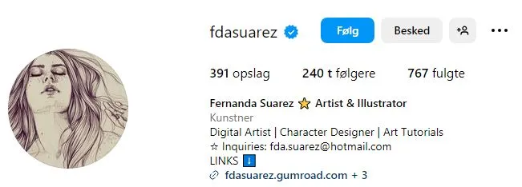
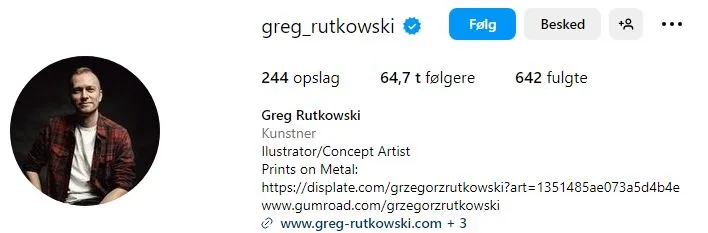
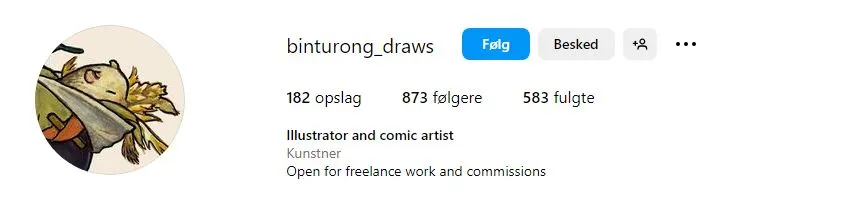

Kunstner der er værd at tjekke på Instagram
Hvis du er på udkig efter en variation af kunstneriske stilarter, så kan det helt klart anbefales at tjekke kunstnerne Fernanda Suarez, Greg Rutkowski og Stella Langecker ud! Disse talentfulde kunster har hver deres unikke stil, lige fra inspirerende originale karaktere til detaljerede realisme i maleri og farverige akvarelillustrationer.

Fernenda Sarurezs passion inden for kunsten er at skabe karakterer med en dybde og en skønhed, der næsten er hypnotisk.

Greg Rutkowski maler detaljerede værker, der både tager dig ind i en verden af fantasi og eventyr, men også en ind i et mere realistisk fortidsbilled.

Stella Langeckers akvarelillustrationer er som at træde ind i et eventyr historie med fantasifulde væsner!